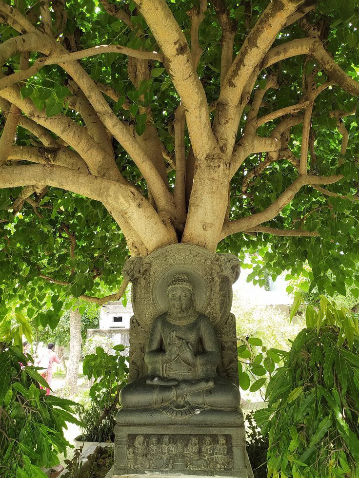
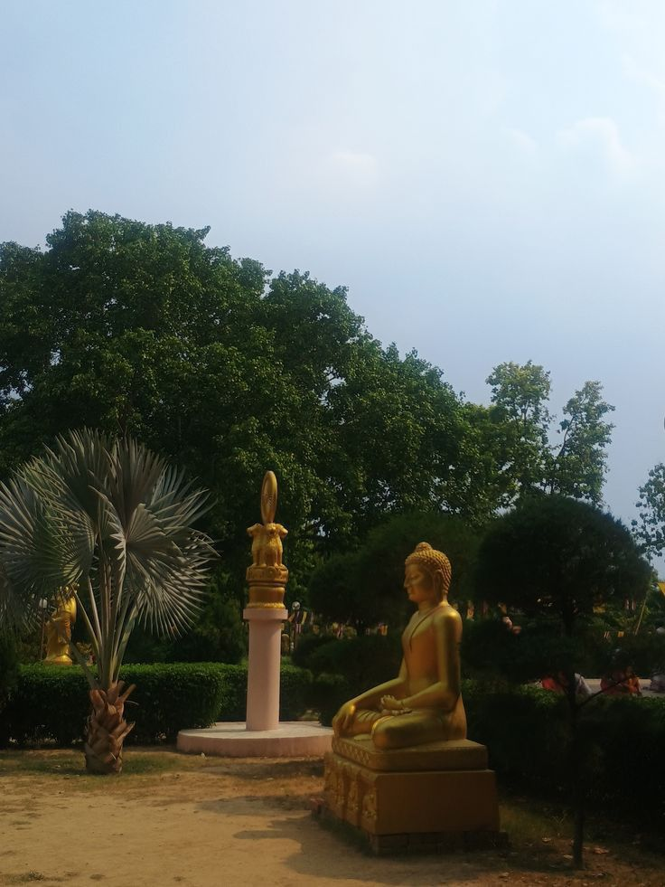
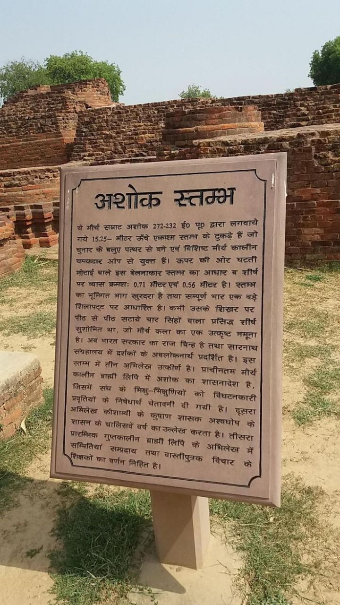
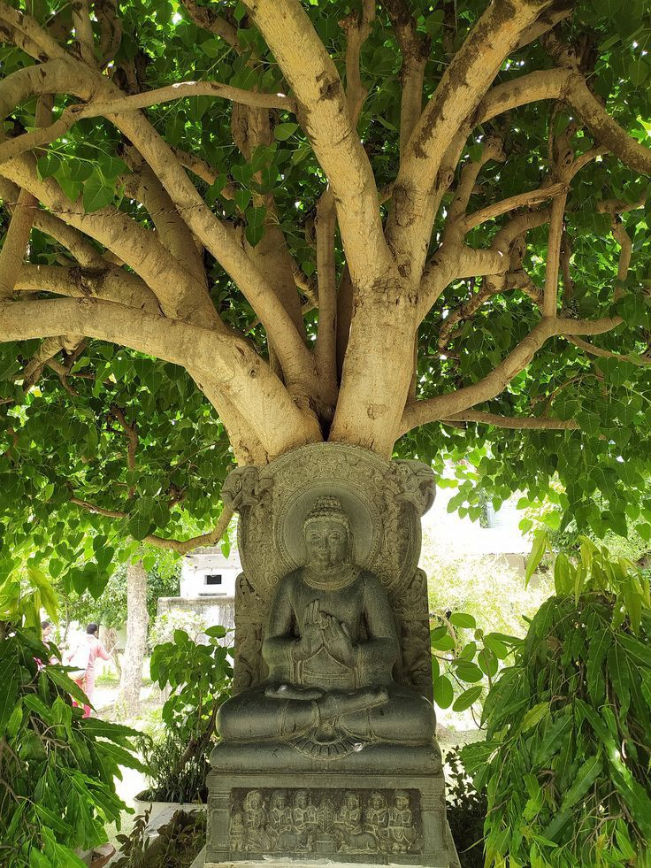
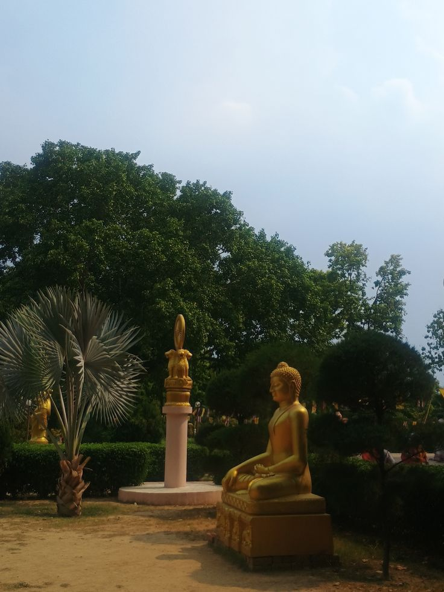
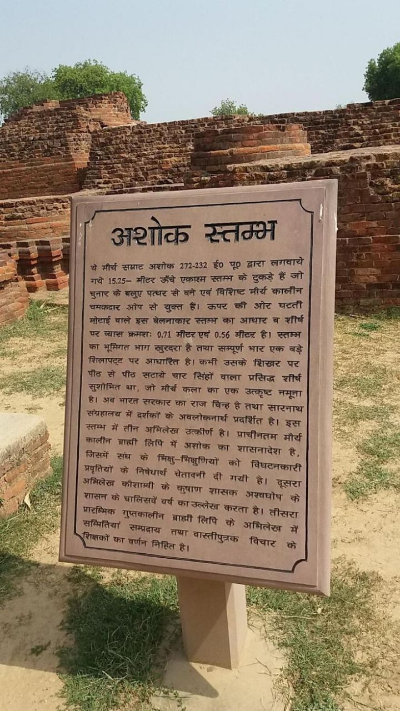

Hinduism
Hinduism: UP holds unparalleled significance in Hinduism, being home to many of its holiest cities:
Ayodhya: Revered as the birthplace of Lord Ram, Ayodhya is one of the seven holiest cities (Sapta Puri) in Hindu tradition. It is a major pilgrimage site, especially after the consecration of the Ram Mandir.
Varanasi (Kashi): Regarded as the spiritual capital of India and one of the oldest continuously inhabited cities in the world, Varanasi is sacred to Lord Shiva. Pilgrims come here to bathe in the Ganges and perform last rites, believing it offers moksha (liberation).
Mathura-Vrindavan: These twin towns are associated with the life and leelas (divine plays) of Lord Krishna. They are central to the Bhakti movement and attract millions during Janmashtami and Holi.
Prayagraj (Allahabad): Known for the confluence (Sangam) of the Ganga, Yamuna, and mythical Saraswati rivers, Prayagraj hosts the Kumbh Mela, the largest human gathering on Earth for spiritual purification.

 




